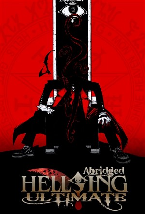

Hellsing Ultimate Abridged (2010)
HorrorFantasyComedyAnimationAction
| Year | 2010 |
|---|---|
| Rating | TV-MA |
| Status | Completed |
| Seasons | 2 |
| Episodes | 10 |
| Genre | Horror, Fantasy, Comedy, Animation, Action |
Hellsing Ultimate Abridged is an abridged version of the Hellsing Ultimate OVA. Most characters and plots remain relatively unchanged, though some aspects of the original series have been altered. A new episode is aired every Halloween.
Episodes
Specials
| # | Title | Air Date | Synopsis |
|---|---|---|---|
| 1 | A Very Hellsing Christmas Special | 2014-12-24 | Because who doesn't want a visit from a jolly man in a big, red coat? |
| 2 | Psych, Hitler!, Bullets From Your Valentine, TheCrimsonFuckr | — | Episodes 1-3 in one |
| 3 | Trigger Warning, Lay Back and Think of Oblivion | 2016-01-21 | Episodes 4-5 in one |
Season 1
| # | Title | Air Date | Synopsis |
|---|---|---|---|
| 1 | Psych, Hitler! / Bullets From Your Valentine / TheCrimsonFuckr | 2010-11-01 | Alucard takes enthusiastic walks at night. / The Valentine Brothers interrupt the Hellsing Organization budget meeting while Alucard is in the basement watching Netflix on his new 70″ plasma widescreen TV. / Alucard take |
| 4 | Trigger Warning / Lay Back and Think of Oblivion | 2013-11-04 | Guest Starring: Jessica Calvello as Rip Van Winkle Brett Weaver as Commander Violet Cherla Borinnos as The Queen / Alucard is stuck on a boat, Integra drives for the first time and London is being burned by an army of |
| 6 | Jour de Colère | 2016-01-31 | Episode 06 of Hellsing Ultimate: Abridged |
| 7 | A Scythe for Sore Eyes | 2016-12-31 | Episode 07 of Hellsing Ultimate: Abridged |
| 8 | Deus Ex Anderson | 2017-10-13 | Episode 08 of Hellsing Ultimate: Abridged |
| 9 | Abridged Over Troubled Walter | 2018-11-24 | Episode 09 of Hellsing Ultimate: Abridged |
| 10 | The Party's Over | 2018-12-08 | Episode 10 of Hellsing Ultimate: Abridged |